Four posts, all built and ready. Three of them are the pieces you already asked for today (band carousel, FX-2, FX-3). They missed today's 3 PM and 5 PM slots, so they move into this week. Nothing is scheduled yet.
| Post | Day · time (Dubai) | Format | Collabs | Comment / DM keyword |
|---|---|---|---|---|
| P1 · Asked again (FX-2) | Tue 10 Nov · 7:00 PM | Reel, 30 s, your voice | @sajknightsbachata · @dance_dubai_videos | AGAIN |
| P2 · Meet the bachata band | Wed 11 Nov · 7:00 PM | Carousel, 8 slides, cream look | @emi_dancer_dubai · @socialdancejournal | START |
| P3 · Stiff basic (FX-3) | Fri 13 Nov · 7:00 PM | Reel, 32 s, your voice | @sajknightsbachata · @dance_dubai_videos | BASIC |
| P4 · Every good dancer forgets the move | Sun 15 Nov · 7:00 PM | Carousel, 7 slides, dark look | @emi_dancer_dubai · @socialdancejournal | START |
Collaborators must accept the invite in the app. P2 touches music heritage, so it carries the origin credit in the caption and I check its comments within 2 hours of posting.
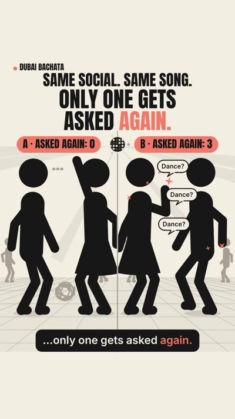
Watch: FX-2 with your voice (30 s)
Trial Reel test: post hook 2 as a Trial Reel within 24 hours and compare 3-second hold after 48 hours.
Same social. Same song. Only one gets asked again. 👀 Comment AGAIN for the 3 tips. Dancer A did six combos and never looked up. His partner spent the whole song just trying to survive. Dancer B did one turn, kept his eyes on her, and paused with the music. She laughed the whole way through. What people remember is how the dance felt, not how many moves were in it: 1. Eyes up, not on your feet. 2. Match their level. 3. Leave space for them to play with the music. Want to practise this with us? Foundation with Saj & Emi is Sunday 8 PM and Thursday 7:30 PM at Dance Case Studio, JLT. No partner or dance background needed. Be honest: A or B? 👇 #DubaiBachata #BachataDubai #SocialDancing #BachataForBeginners #DanceConnection
Pin: Be honest: have you ever been Dancer A? 😅
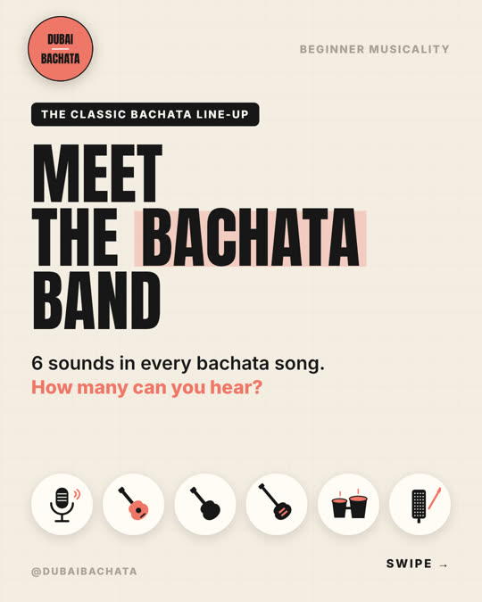
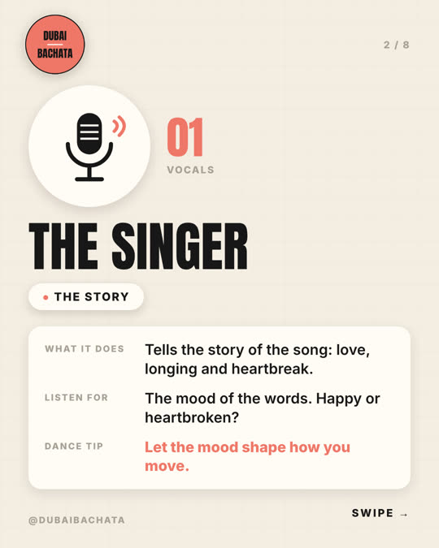
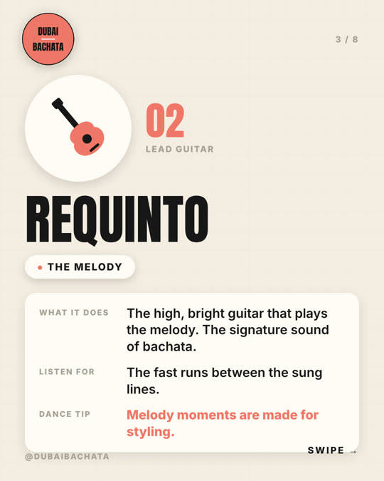
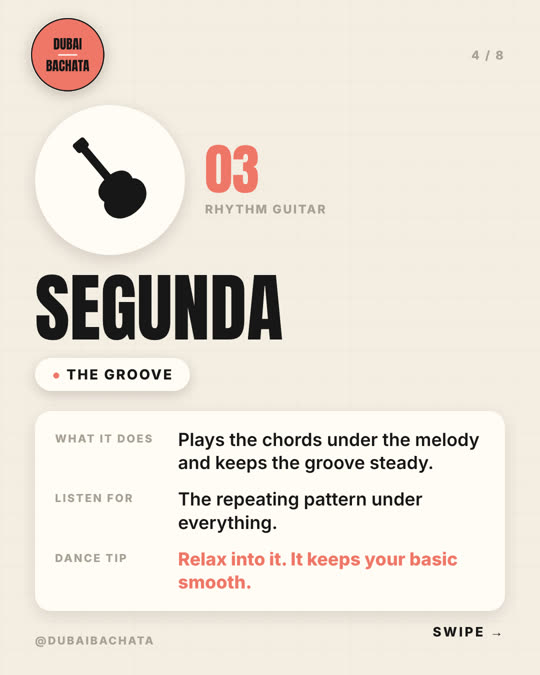
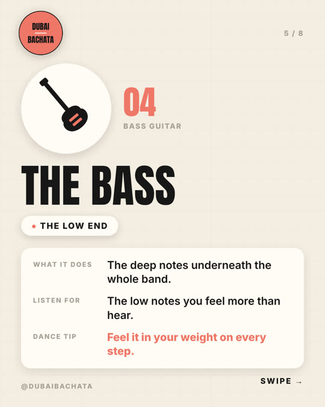
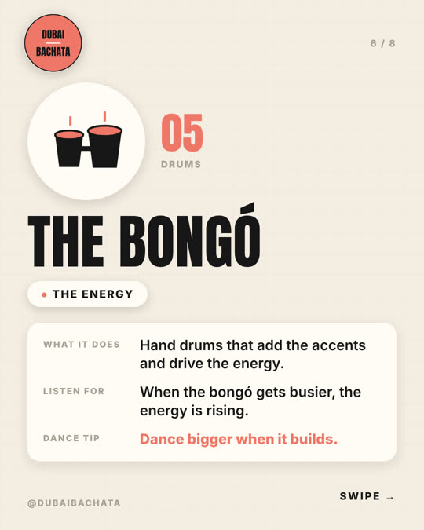
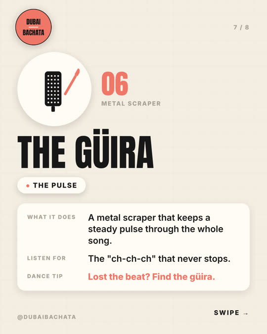
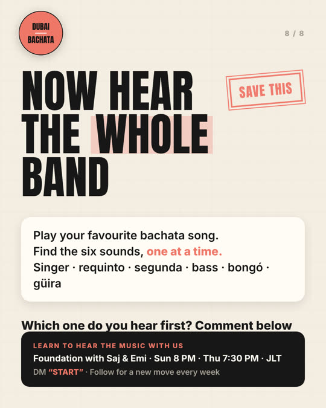
Most beginners only hear the drums. There's a whole band in every bachata song 🎶 This is the classic Dominican bachata line-up, the sound behind every song you dance to: 🎤 The singer: the story 🎸 Requinto (lead guitar): the melody 🎸 Segunda (rhythm guitar): the groove 🎸 Bass: the low end 🥁 Bongó: the energy 〰️ Güira: the pulse that never stops Once you can hear them, you stop dancing to the count and start dancing to the song. Save this and try it with your favourite bachata song tonight 🎧 Which one do you hear first? 👇 Learn to hear the music with us: Foundation with Saj & Emi, Sunday 8 PM or Thursday 7:30 PM in JLT. DM "START" and we'll send you the details. Follow for a new move every week. #DubaiBachata #BachataDubai #DominicanBachata #BachataMusicality #LearnBachata
Heritage check: passed. It only names the instruments, calls no dance a "style", credits Dominican bachata in the caption, and uses no flags as decoration.
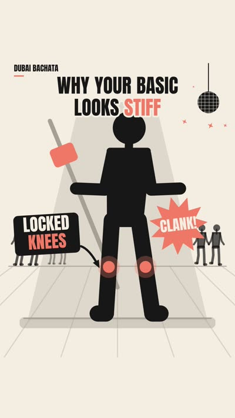
Watch: FX-3 with your voice (32 s)
Why your bachata basic looks stiff (and the 2-minute fix). Comment BASIC for the drill. Most stiff basics come from locked knees. When the knees are straight, the only way to get the hip moving is to push it sideways, and that's what looks forced. The fix is to shift your weight instead: 1. Soft knees, never locked. 2. Put your full weight on each step. 3. Count it slowly: 1-2-3-tap, then 5-6-7-tap the other way. Don't move the hip on purpose. Let it follow the weight. Same basic. No robot. 🤖➡️💃 Want someone to check yours? Foundation with Saj & Emi, Sunday 8 PM or Thursday 7:30 PM at Dance Case Studio, JLT. No partner or dance background needed. Comment BASIC and we'll send you the 2-minute drill. #DubaiBachata #BachataDubai #BachataBasics #BachataForBeginners #LearnBachata
Pin: Try it now and tell us: robot or smooth? 🤖💃
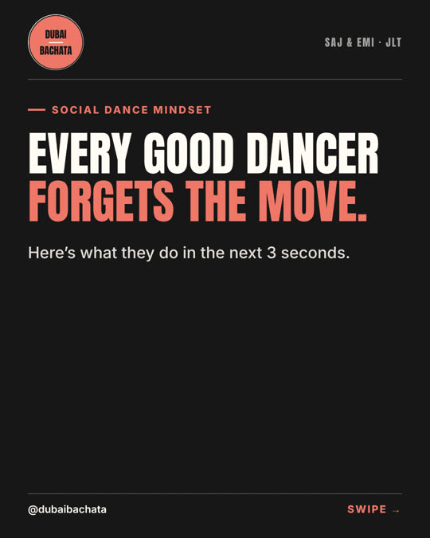
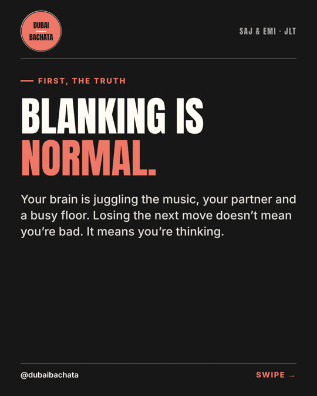
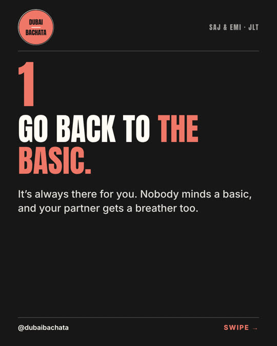
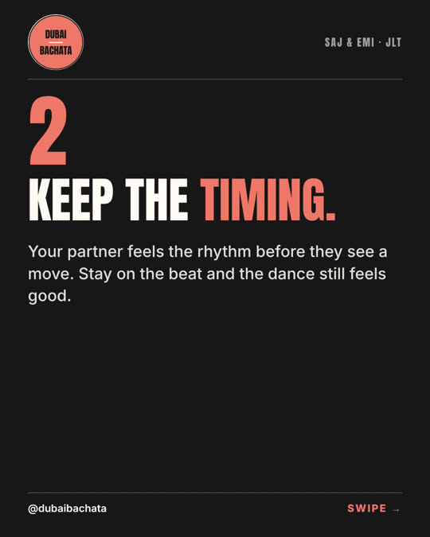
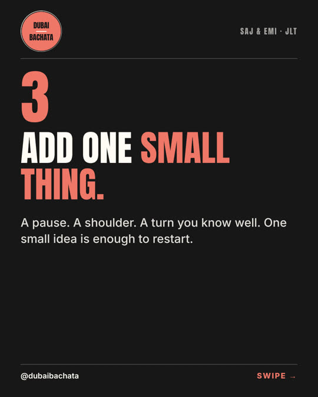
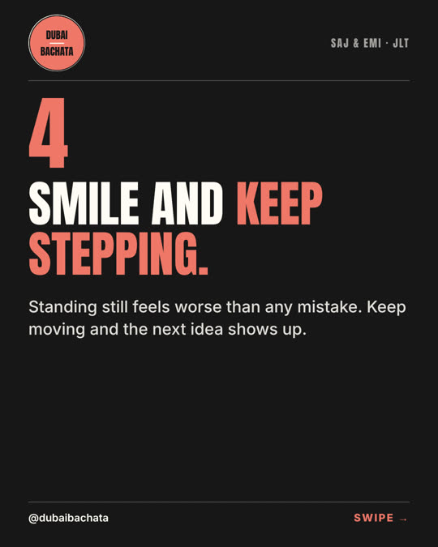
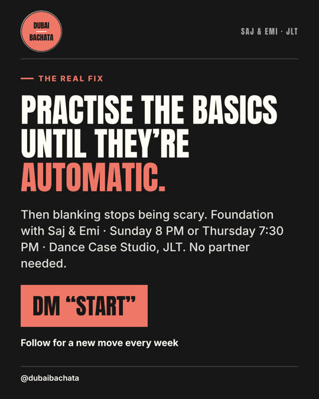
Every good dancer forgets the move. What matters is the next 3 seconds 👇 Blanking happens to everyone. You're juggling the music, your partner and a busy floor. 1. Go back to the basic. It's always there. 2. Keep the timing. Your partner feels the rhythm first. 3. Add one small thing: a pause, a shoulder, a turn you know. 4. Smile and keep stepping. Standing still feels worse than any mistake. The real fix? Practise the basics until they're automatic. What do you do when you blank? Tell us 👇 Foundation with Saj & Emi, Sunday 8 PM or Thursday 7:30 PM at Dance Case Studio, JLT. No partner needed. DM "START" and we'll send you the details. Follow for a new move every week. #DubaiBachata #BachataDubai #BachataBeginners #SocialDancing #LearnBachata
| Post | Reach | Saves | Shares |
|---|---|---|---|
| FX-6 roots reel · 5 Nov | 3,941 | 144 | 163 |
| FX-1 solo freeze · 3 Nov | 2,843 | 12 | 22 |
| Practice reel · 1 Nov | 2,357 | 43 | 88 |
| Asking carousel · 5 Nov | 763 | 6 | 2 |
| FX-7 levels reel · 8 Nov (1 day) | 550 | 4 | 3 |
| Nerves carousel · 3 Nov | 323 | 2 | 1 |
Reels reach 3–10× more people than carousels. FX-6 won on saves and shares, but much of that came from the heritage debate. Carousels are still weak, so P2 and P4 lead with a strong save hook.
Class 12 Nov, vertical 9:16, for next week's Friday demo and Sunday class post.
Reply Bank (waiting for your tap): the same reply, "Thank you! 🙌 Who would you dance this with?", is ready on 3 praise comments: 🔥 on FX-7, "I love this, makes so much sense" on FX-1, and 🔥 on the practice reel. Supermetrics now asks for an approval link on every reply, so these links are in my message.
Need you:
Every CTA keyword this week has a script. I added the four that were missing (SOLO, ROOTS, AGAIN, BASIC) to the playbook. Paste them into Instagram's automated responses before P1 goes out on Tuesday.
| Keyword | Used by | Script |
|---|---|---|
| AGAIN | P1 | Added today |
| BASIC | P3 | Added today |
| START | P2, P4 | In playbook |
| SOLO · ROOTS | FX-1, FX-6 (live) | Added today |